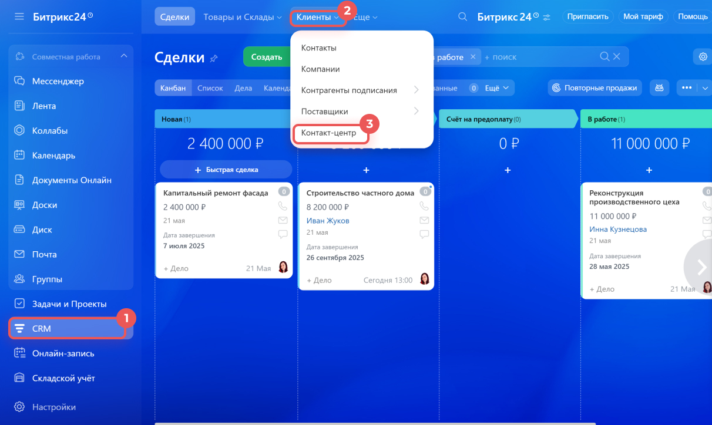
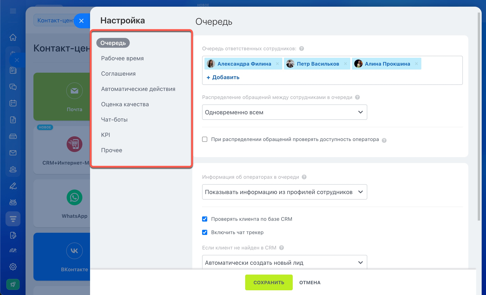
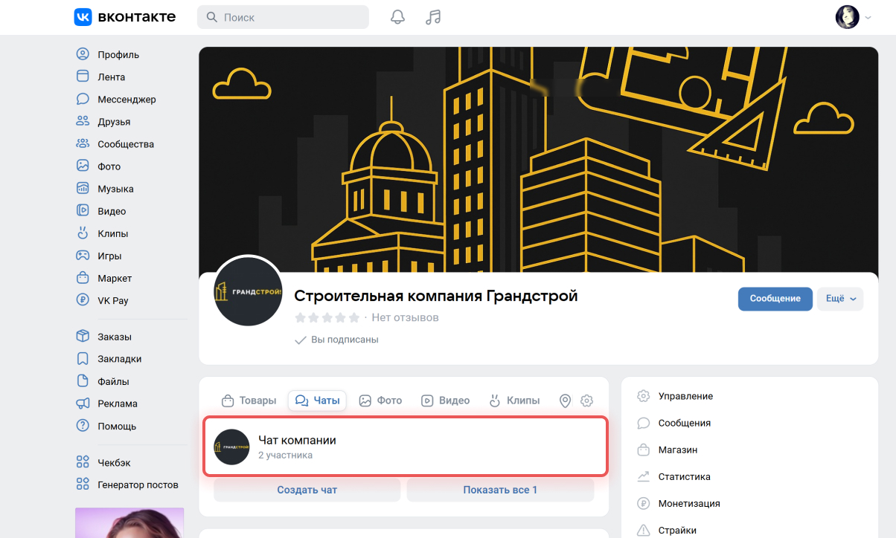

Интеграция соцсетей и Битрикс24: Открытые линии и штатные каналы
Часть клиентов вообще не звонит и не пишет на сайте — они находят компанию во ВКонтакте или Instagram и сразу пишут в сообщения сообщества. Если эти сообщения читает менеджер с личного телефона, а не CRM, обращение легко потерять вместе с историей переписки. У Битрикс24 для этого есть штатный механизм — Открытые линии: он объединяет соцсети, мессенджеры и чат на сайте в одну очередь операторов. Разбираем, как это работает, какие соцсети подключаются без программирования и что нужно знать до подключения.
Что даёт подключение соцсетей к CRM
Без интеграции переписка с клиентами обычно распределена по личным телефонам сотрудников: кто-то отвечает во ВКонтакте с рабочего компьютера, кто-то — в Instagram с личного смартфона. Когда такой сотрудник в отпуске, заболел или уволился, вместе с ним пропадает и история переписки, и понимание, на каком этапе находится клиент.
Подключение соцсетей к Битрикс24 переносит все сообщения в одну систему: обращение автоматически попадает в очередь, распределяется на свободного менеджера, а история переписки сохраняется в карточке клиента — даже если завтра с ним будет общаться другой сотрудник.
Что такое Открытые линии Битрикс24
Открытая линия — это не отдельная функция «для соцсетей», а общий механизм обработки обращений, на котором построен весь Контакт-центр Битрикс24. Он одинаково работает для ВКонтакте, Instagram, Telegram, онлайн-чата на сайте и других каналов — поэтому разобраться в нём один раз полезно независимо от того, какие каналы вы подключаете.

Когда канал подключён, для него создаётся открытая линия — и именно в её настройках описано, как компания будет обрабатывать обращения: кто отвечает, в каком порядке, что клиент увидит в нерабочее время и что произойдёт, если никто не взял диалог в течение заданного времени.
 Обращения делятся между сотрудниками поровну, строго по очереди или сразу всем — кто первый ответит
Обращения делятся между сотрудниками поровну, строго по очереди или сразу всем — кто первый ответит- Можно ограничить число одновременных диалогов на одного оператора
- Занятость сотрудника проверяется автоматически — обращение не уйдёт тому, кто в отпуске или офлайн
- Диалог можно передать другому оператору или в другую линию вручную
- Рабочее время и автоответ для сообщений вне графика — в том числе по выходным и праздникам
- Чат-трекер узнаёт клиента по CRM даже при обращении из разных каналов и создаёт лид или сделку автоматически
- Оценка качества обслуживания клиентом после диалога
- Чат-бот может отвечать на первые сообщения и передавать сложные вопросы оператору

Какие соцсети подключаются без программирования
В Контакт-центре можно подключить ВКонтакте, Instagram, Facebook (отдельно сообщения и отдельно комментарии к постам) и Одноклассники — каждый канал в один клик, без разработки. Само подключение бесплатное: платить нужно только за тариф Битрикс24, а количество открытых линий, которые можно создать одновременно, зависит от тарифа — от одной на бесплатном до неограниченного числа на «Профессиональном» и «Энтерпрайз».

На той же панели видно и заметно больше каналов, чем классические соцсети, — например, отдельную плитку сервиса Wazzup. Это уже не штатный канал, а сторонний сервис-посредник: он актуален прежде всего для мессенджеров и разобран отдельно в статье «Интеграция мессенджеров и Битрикс24».
Пример: как подключается сообщество ВКонтакте
Логика для Instagram, Facebook и Одноклассников похожая — авторизация под администратором страницы или сообщества и привязка к открытой линии. Разберём на примере ВКонтакте, как выглядит подключение целиком.
1. Контакт-центр
Переходим в CRM → Клиенты → Контакт-центр и выбираем канал ВКонтакте.
2. Открытая линия
Выбираем существующую открытую линию или создаём новую — именно к ней привяжется сообщество.
3. Авторизация
Входим в аккаунт ВКонтакте, где есть нужное сообщество. Подключить может только его администратор или владелец.
4. Выбор сообщества
Выбираем сообщество из списка — это может быть группа, публичная страница или мероприятие — и разрешаем доступ приложению Bitrix24 Open Channels.

Что стоит знать заранее
- В Битрикс24 попадают только личные сообщения сообщества — посты на стене и комментарии к ним не приходят в CRM
- Одно сообщество можно подключить только к одной открытой линии — для нескольких пабликов нужно несколько линий
- Сообщения из группового чата сообщества попадают в один общий диалог и не создают отдельные сделки в CRM
- Если администратор перестаёт быть админом сообщества, канал отключается автоматически
- Соцсети хорошо закрывают входящие обращения — клиент написал, менеджер ответил в общей очереди
- Для проактивной работы — написать клиенту первым, напомнить об акции — у каждой площадки свои правила и ограничения
- Для WhatsApp и Telegram эти правила особенно заметны — разобрали их в статье про мессенджеры
А что с мессенджерами?
WhatsApp, Telegram и Viber тоже подключаются через Открытые линии — но у них есть свои правила переписки и ограничения на первое сообщение клиенту, из-за которых бизнес часто подключает отдельный сервис вроде Wazzup. Разобрали это подробно в отдельной статье.
Что входит в интеграцию соцсетей
Аудит каналов
Смотрим, откуда сейчас пишут клиенты, и кто из сотрудников за это отвечает — часто выясняется, что каналов больше, чем думает руководитель.
Подключение сообществ
Привязываем ВКонтакте, Instagram, Facebook и Одноклассники к открытым линиям — с правами администратора, без разработки.
Очередь и автоответы
Настраиваем распределение обращений между менеджерами, рабочее время и автоответ для сообщений вне графика.
CRM-формы и виджет
Добавляем сбор контактов прямо в чате и виджет со всеми каналами на сайт компании.
Обучение сотрудников
Показываем менеджерам, как отвечать в едином окне, передавать диалоги коллегам и пользоваться быстрыми ответами.
Соберём все соцсети в одном окне CRM
Подключим ВКонтакте, Instagram, Facebook и Одноклассники к Битрикс24, настроим очередь операторов и автоответы под ваш график работы.